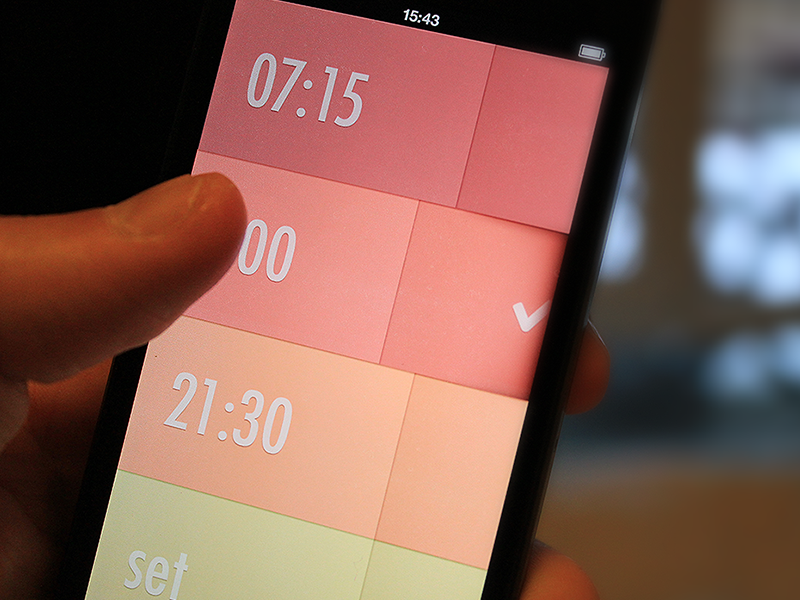

Famo.us/Angular
High Performance JavaScript Animations for a More Interactive Web
https://github.com/Famous/famous-angular
Presented by Zack Brown | @zackaboo
from 
Mobile: User Experience Expectations





Why hasn't Web taken over the Mobile World?
CSS
Pure CSS's Challenges with Rich Animations
Traditional JS's Challenges with Rich Animations:
Bold Claim
If only there were a way to make JS animations performant...
Enter: Famo.us
- Famo.us's core value proposition is cross-platform, high-performance, JavaScript-driven animations.
- With the ability to achieve 60FPS animations across devices using JavaScript, we can finally knock out that final barrier to Web-World-Domination: Rich Interactivity